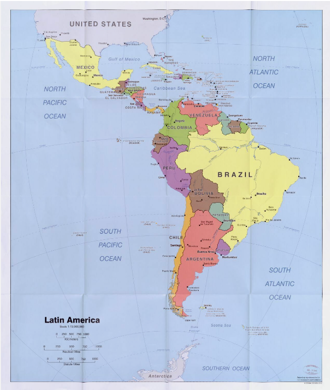

Pasarela Guitarrística - por Juan Carlos Martínez Varela
La peregrinación Compositor: Ariel Ramírez
Inspiration (rumba flamenca) - Gipsy Kings
La llorona, canción popular mexicana (Oaxaca y Veracruz).
Encuentros - compositores: Jorge Komori / Oscar Cordova
Paco de Lucia - mix de varios temas
Mañana de Carnaval Compositor: Luiz Bonfa
Minueto en Sol mayor de Bach Compositor: Johann Sebastian Bach
Guitarra MIDI (Guitarra Yamaha EZ-AG) por Juan Carlos Martínez Varela
CLASE 156 - Tuplas, agrupamientos de notas y acentos (Documento en Word)
Géneros musicales
Música Latinoamericana

Tango
Astor Piazzolla
Bossa Nova
Luiz Bonfa
Música española